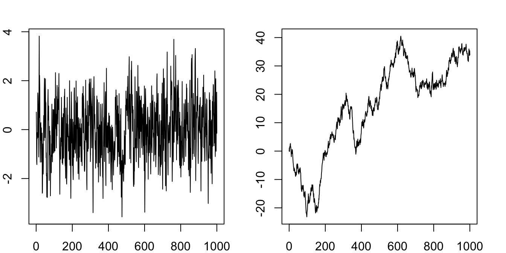
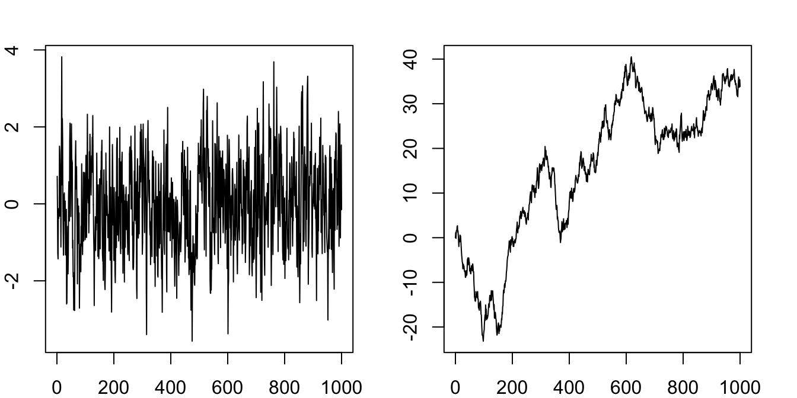
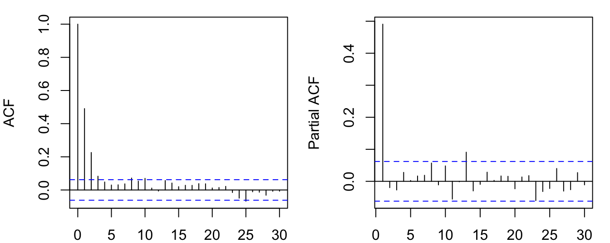
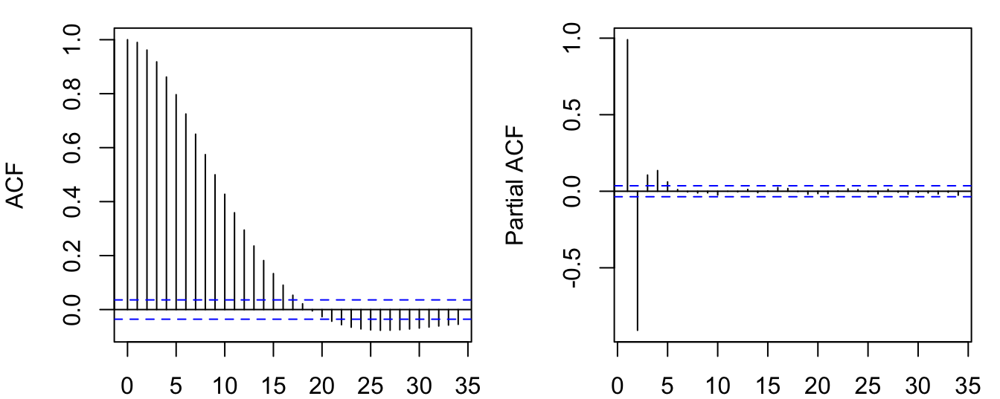

y = arima.sim(list(ar=0.5), n=1000)
z = arima.sim(list(order=c(0,1,0)), n=1000)
plot(cbind(y,z), plot.type="multiple", nc=2, ann=F,
mar.multi=rep(2,4), oma.multi = rep(0,4))
We start with the simplest time series model — autoregressive model, or AR model. The simplest from of AR model is AR(1), which involves only one lag,
\[ y_t = \mu + \phi y_{t-1} + \epsilon_t, \tag{6.1}\]
where \(\epsilon_t \sim \text{WN}(0,\sigma^2)\). The model can be extended to include more lags. An AR(\(p\)) model is defined as
\[ y_t = \mu + \phi_1 y_{t-1} + \phi_2 y_{t-2} + \dots + \phi_p y_{t-p} + \epsilon_t. \]
We focus on AR(1) first. The model states that the value of \(y_t\) is determined by a constant, its previous value, and a random innovation. We call the last term \(\epsilon_t\) innovation, not an error term. It is not an error, it is a random contribution that is unknown until time \(t\). It should also not be confused with the so-called “structural shock”, which is attached with a structural meaning and will be discussed in later chapters.
The model is probabilistic, as oppose to deterministic, in the sense that some information is unknown or deliberately omitted, so that we do not know the deterministic outcome, but only a probability distribution.
Think about tossing a coin: if every piece of information is incorporated in the model, including the initial speed and position, the air resistance, and so on; then we can figure out the exact outcome, whether the coin will land on its head or tail. But this is unrealistic. Omitting all these information, we can model the process as a Bernoulli distribution. The probability model will not give a deterministic outcome, but only a distribution with each possible value associated with a probability.
The assumption that a process is only determined by its past values and a white noise innovation seems very restrictive. But it is not. Think about the three assumptions for technical analysis of the stock market (there are still many investors believing this): (1) The market discounts everything, (2) prices move in trends and counter-trends, and (3) price action is repetitive, with certain patterns reoccurring. Effectively, it is saying we can predict the stock market by the past price patterns. If we were to write a model for the stock market based on these assumptions, AR(\(p\)) isn’t a bad choice at all.
Note that the model can be rewritten as
\[ y_t - \frac{\mu}{1-\phi} = \phi\left(y_{t-1} - \frac{\mu}{1-\phi}\right) + \epsilon_t, \]
assuming \(\phi\neq 1\). If we define \(\tilde{y_t}=y_t - \frac{\mu}{1-\phi}\), we can get rid of the constant term:
\[ \tilde{y}_t = \phi\tilde{y}_{t-1} + \epsilon_t. \tag{6.2}\]
It can be easily shown, if \(y_t\) is stationary, \(\frac{\mu}{1-\phi}\) is the stationary mean. Because this mechanical transformation can always be done to remove the constant. We can simply ignore the constant term without lost of generality.
Working with demeaned variables greatly simplify the notation. For example, assuming \(\mathbb{E}(y_t)=0\), the variance is simply the second-order moment \(\mathbb{E}(y_t^2)\); the covariance can be written as \(\mathbb{E}(y_ty_{t-k})\).
For a constant-free AR(1) model, we can rewrite the model as follows:
\[ \begin{aligned} y_t &= \phi y_{t-1} + \epsilon_t \\ &= \phi( \phi y_{t-2} + \epsilon_{t-1}) + \epsilon_t \\ &= \phi^2 y_{t-2} + \phi\epsilon_{t-1} + \epsilon_t \\ &= \phi^2 (\phi y_{t-3} + \epsilon_{t-2}) + \phi\epsilon_{t-1} + \epsilon_t \\ &= \phi^3 y_{t-3} + \phi^2\epsilon_{t-2} + \phi\epsilon_{t-1} + \epsilon_t \\ &\;\vdots \\ &= \phi^t y_0 + \sum_{j=0}^{t-1} \phi^j\epsilon_{t-j} \\ &= \sum_{j=0}^{\infty} \phi^j\epsilon_{t-j}. \end{aligned} \tag{6.3}\]
The exercise shows an AR(1) process can be reduced to an MA process, which will be discussed in the next section. It says the value of \(y_t\) is determined by its initial value (if it has one) and the accumulated innovations in the past. It is our deeds in history that shapes our world today.
The property that an AR process can be rewritten as an infinite MA process with absolute summable coefficients \(\sum_{j=0}^{\infty}|\phi^j|<\infty\) is called causal. This must not be confused with the causal effect in econometrics (defines in the ceteris paribus sense). To avoid confusion, we avoid use this term as much as possible.
Now we focus our attention on the critical parameter \(\phi\). If \(|\phi|>1\), the process is explosive. We are not interested in explosive processes. If a real-world time series grows exponentially, we take logarithm to transform it to linear. So in most of our discussions, we rule out the case of explosive behaviour.
If \(|\phi|<1\), \(\phi^j\to 0\) as \(j\to\infty\). This means the influence of innovations far away in the past decays to zero. We will show that the series is stationary and ergodic.
If \(|\phi|=1\), we have \(y_t = \sum_{j=0}^{\infty} \text{sgn}(\phi)^j\epsilon_{t-j} = \sum_{j=0}^{\infty}\tilde{\epsilon}_{t-j}\). This means the influence of past innovations will not decay no matter how distant away they are. This is known as a unit root process, which will be covered in later chapters. But it is clear that the process is not stationary. Consider the variance of \(y_t\) conditioned on an initial value:
\[ \text{var}(y_t|y_0) = \text{var}(\sum_{j=0}^{t-1}\epsilon_{t-j})=\sum_{j=0}^{t-1}\text{var}(\epsilon_{t-j})=\sum_{j=0}^{t-1}\sigma^2=t\sigma^2. \]
The variance is increasing with time. It is not constant. Figure 6.1 simulates the AR(1) with \(\phi=0.5\) and \(\phi=1\) respectively.
y = arima.sim(list(ar=0.5), n=1000)
z = arima.sim(list(order=c(0,1,0)), n=1000)
plot(cbind(y,z), plot.type="multiple", nc=2, ann=F,
mar.multi=rep(2,4), oma.multi = rep(0,4))
Proposition 6.1 An AR(1) process with \(|\phi|<1\) is covariance stationary.
Proof. Let’s compute the mean, variance and covariance for the AR(1) process.
\[ \mathbb{E}(y_t) = \mathbb{E}\left[\sum_{j=0}^{\infty} \phi^j\epsilon_{t-j}\right] = \sum_{j=0}^{\infty} \phi^j\mathbb{E}[\epsilon_{t-j}]=0. \]
\[ \begin{aligned} \text{var}(y_t) &= \text{var}\left[\sum_{j=0}^{\infty} \phi^j\epsilon_{t-j}\right] = \sum_{j=0}^{\infty} \phi^j\text{var}[\epsilon_{t-j}] \\ &= \sigma^2 \sum_{j=0}^{\infty} \phi^j =\frac{\sigma^2}{1-\phi}. \end{aligned} \]
For the covariances,
\[ \begin{aligned} \gamma_1 &= \mathbb{E}(y_ty_{t-1}) = \mathbb{E}((\phi y_{t-1} + \epsilon_t)y_{t-1}) \\ &= \mathbb{E}(\phi y_{t-1}^2 + \epsilon_t y_{t-1}) \\ &= \phi\mathbb{E}(y_{t-1}^2) + 0 \\ &= \frac{\phi\sigma^2}{1-\phi}; \end{aligned} \]
\[ \begin{aligned} \gamma_2 &= \mathbb{E}(y_ty_{t-2}) = \mathbb{E}((\phi y_{t-1} + \epsilon_t)y_{t-2}) \\ &= \mathbb{E}(\phi y_{t-1}y_{t-2} + \epsilon_t y_{t-2}) \\ &= \phi\mathbb{E}(y_{t-1}y_{t-2}) \\ &= \phi\gamma_1 = \frac{\phi^2\sigma^2}{1-\phi};\\ &\;\vdots \\ \gamma_j &= \frac{\phi^j\sigma^2}{1-\phi}. \end{aligned} \]
All of them are independent of time \(t\). By Definition 4.2, the process is covariance stationary.
So the ACF decays gradually as \(\phi^j \to 0\). What about the PACF? Estimating the PACF is equivalent to regressing \(y_t\) on its lags. Since there is only one lag, the PACF should have non-zero value only for the first lag, and zeros for all other lags.
par(mfrow=c(1,2), mar=c(2,4,1,1))
acf(y); pacf(y)
To facilitate easy manipulation of lags, we introduce the lag operator:
\[ Ly_t = y_{t-1}. \]
The AR(1) process can be written with the lag operator:
\[ y_t = \phi Ly_t+ \epsilon_t \implies (1-\phi L)y_t = \epsilon_t. \]
The lag operator \(L\) can be manipulated just as polynomials. It looks weird, but it actually works. Do a few exercises to convince yourself.
\[ L^2 y_t = L(Ly_t) = Ly_{t-1} = y_{t-2}. \]
\[ \begin{aligned} (1-L)^2y_t &= (1-L)(y_t - y_{t-1}) \\ &= (y_t-y_{t-1})-(y_{t-1}-y_{t-2}) \\ &= y_t - 2y_{t-1} + y_{t-2} \\ &=(1-2L+L^2)y_t. \end{aligned} \]
We can even inverse a lag polynomial (provided \(|\phi|<1\)),
\[ \begin{aligned} (1-\phi L)y_t &= \epsilon_t \\ \implies y_t &= (1-\phi L)^{-1}\epsilon_t =\sum_{j=0}^{\infty} \phi^j L^j \epsilon_t = \sum_{j=0}^{\infty} \phi^j \epsilon_{t-j}. \end{aligned} \]
We reach the same conclusion as Equation 6.3 with the lag operator.
We now generalize the conclusions above to AR(\(p\)) processes. With the help of the lag operator, an AR(\(p\)) process can be written as
\[ (1-\phi_1 L-\phi_2 L^2-\dots-\phi_p L^p) y_t = \epsilon_t, \]
or even more parsimoniously,
\[ \phi(L)y_t = \epsilon_t. \]
Note that we ignore the constant term, which can always be removed by redefine \(\tilde{y}_t = y_t - \frac{\mu}{1-\phi_1-\phi_2-\dots-\phi_p}\).
To derive the MA representation, we need to figure out \(\phi^{-1}(L)\). By the Fundamental Theorem of Algebra, we know the polynomial \(\phi(z)\) has \(p\) roots in the complex space. So the lag polynomial can be factored as
\[ (1-\lambda_1L)(1-\lambda_2L)\dots(1-\lambda_pL) y_t = \epsilon_t, \]
where \(z=\lambda_i^{-1}\) is the \(i\)-th root of \(\phi(z)\). If the roots are outside the unit circle, \(|\lambda_i|<1\) means each of the left hand terms is inversible.
\[ \begin{aligned} y_t &= \frac{1}{(1-\lambda_1L)(1-\lambda_2L)\dots(1-\lambda_pL)}\epsilon_t \\ &= \left(\frac{c_1}{1-\lambda_1L} + \frac{c_2}{1-\lambda_2L} + \dots + \frac{c_p}{1-\lambda_pL}\right)\epsilon_t \\ &= \sum_{j=0}^{\infty}(c_1\lambda_1^j+c_2\lambda_2^j+\dots+c_p\lambda_p^j)L^j\epsilon_t \\ &= \sum_{j=0}^{\infty} \theta_j\epsilon_{t-j}, \text{ where }\theta_j=c_1\lambda_1^j+\dots+c_p\lambda_p^j. \end{aligned} \]
It follows that this process has constant mean and variance. For the covariances, given
\[ y_t = \phi_1 y_{t-1} + \phi_2 y_{t-2} + \dots + \phi_p y_{t-p} + \epsilon_t, \]
Multiply both sides by \(y_t\) and take expectation,
\[ \mathbb{E}[y_t^2] = \phi_1 \mathbb{E}[y_ty_{t-1}] + \phi_2 \mathbb{E}[y_ty_{t-2}] + \dots + \phi_p \mathbb{E}[y_ty_{t-p}], \]
\[ \gamma_0 = \phi_1\gamma_{-1} + \phi_2\gamma_{-2} + \dots + \phi_p\gamma_{-p}. \]
Similarly, multiply both sides by \(y_{t-1},\dots,y_{t-j}\), we have
\[ \begin{aligned} \gamma_1 &= \phi_1\gamma_{0} + \phi_2\gamma_{-1} + \dots + \phi_p\gamma_{-p+1},\\ &\;\vdots\\ \gamma_j &= \phi_1\gamma_{j-1} + \phi_2\gamma_{j-2} + \dots + \phi_p\gamma_{j-p}. \end{aligned} \]
This is called the Yule-Walker equation. The first \(p\) unknowns \(\gamma_0,\dots,\gamma_{p-1}\) can be solved by the first \(p\) equations. The rest can then be solved iteratively.
It can be shown all of the covariances are invariant with time. Therefore, under the condition all \(|\lambda_i|<1\), the AR(\(p\)) process is stationary.
For the PACF, a regression of \(y_t\) over its lags would recover \(p\) non-zero coefficients. Longer lags should have coefficients insignificantly different from zero.
y = arima.sim(list(ar=c(2.4, -1.91, 0.5)), n=3000)
par(mfrow=c(1,2), mar=c(2,4,1,1))
acf(y); pacf(y)
Proposition 6.2 An AR(\(p\)) process is stationary if all the roots of \(\phi(z)\) are outside the unit circle.
Proposition 6.3 An AR(\(p\)) process is characterized by (i) an ACF that is infinite in extend but tails of gradually; and (ii) a PACF that is (close to) zero for lags after \(p\).